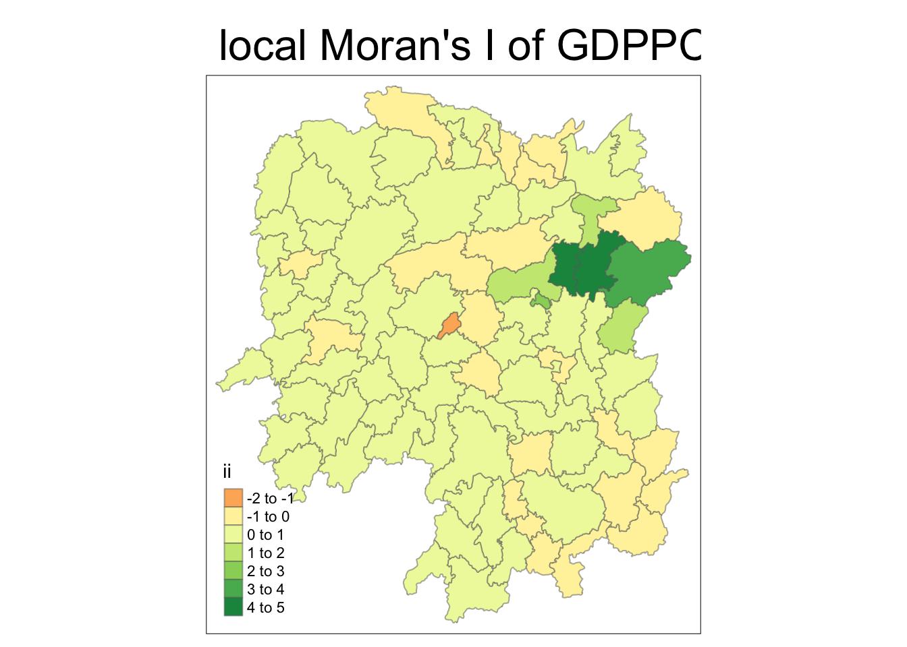
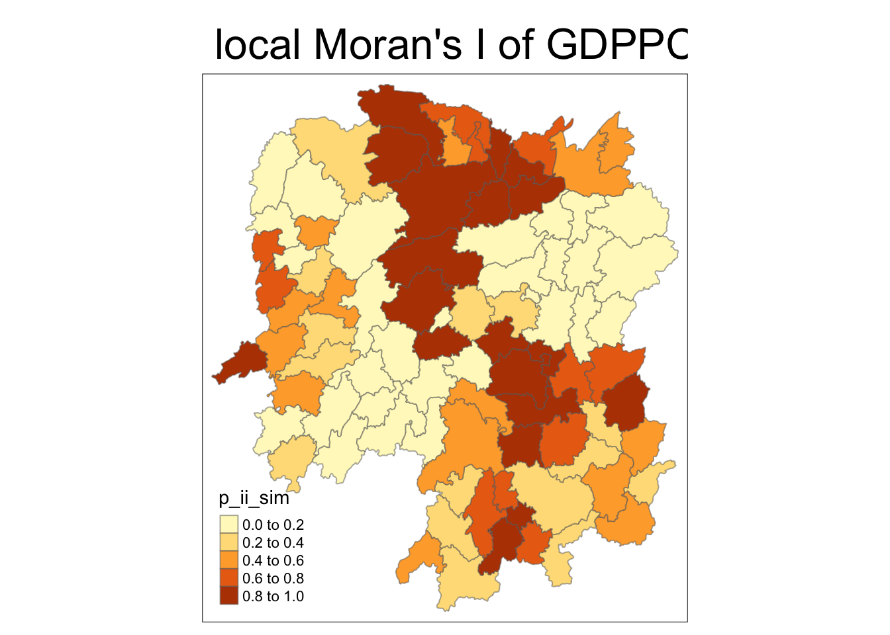
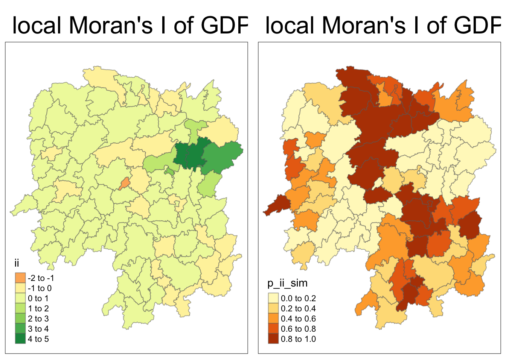
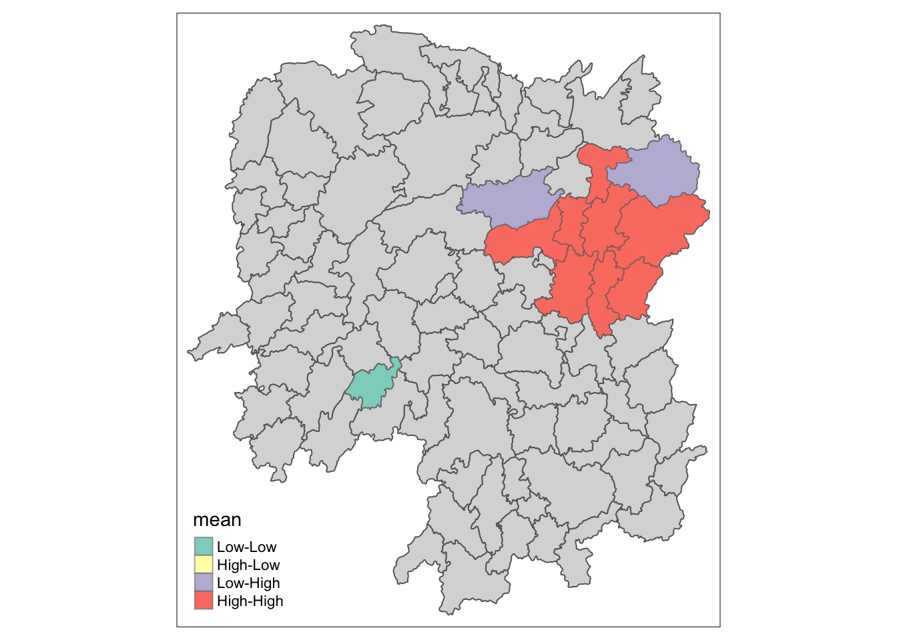
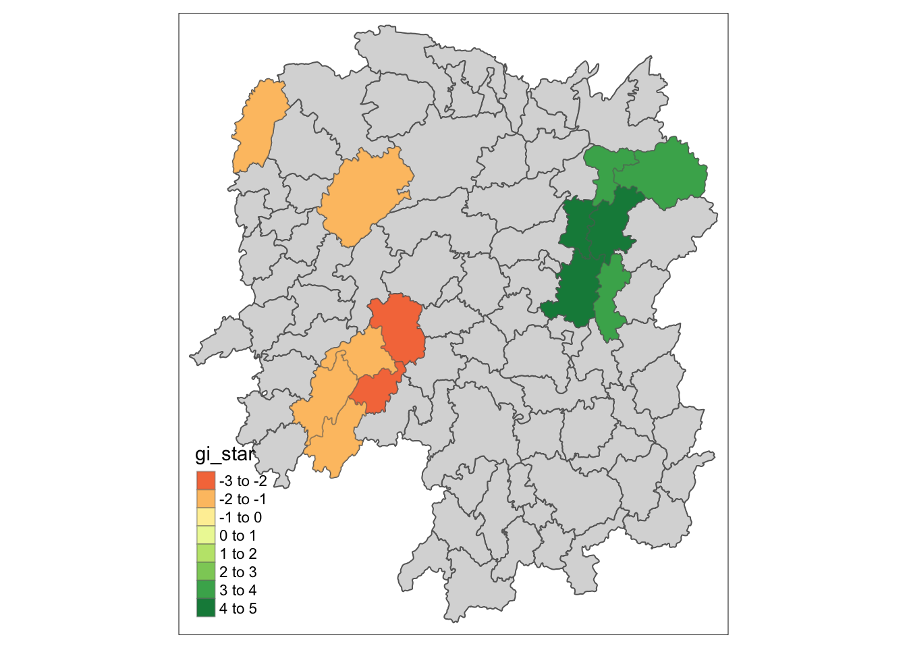
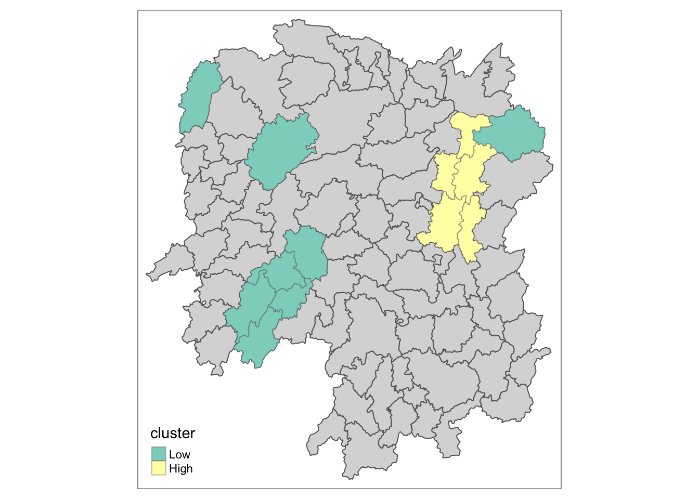

pacman::p_load(sf, sfdep, tmap, tidyverse)In-class Exercise 06
1.0 Objective & Overview
By the end to this in-ckass exercise, you will be able to:
import geospatial data using appropriate function(s) of sf package,
import csv file using appropriate function of readr package,
perform relational join using appropriate join function of dplyr package,
compute spatial weights using appropriate functions of spdep package, and
calculate spatially lagged variables using appropriate functions of spdep package.
GWModel
2.0 The Study Area and Data
Two data sets will be used in this hands-on exercise, they are:
Hunan county boundary layer. This is a geospatial data set in ESRI shapefile format.
Hunan_2012.csv: This csv file contains selected Hunan’s local development indicators in 2012.
Before we get started, we need to ensure that spdep, sf, tmap and tidyverse packages of R are currently installed in your R.
2.1 Import shapefile into R environment
The code chunk below uses st_read() of sf package to import Hunan shapefile into R. The imported shapefile will be simple features Object of sf.
hunan <- st_read(dsn = "data/geospatial",
layer = "Hunan")Reading layer `Hunan' from data source
`/Users/jezelei/jezeleii/IS415-GA/In-Class_Exercise/InClassEx06/data/geospatial'
using driver `ESRI Shapefile'
Simple feature collection with 88 features and 7 fields
Geometry type: POLYGON
Dimension: XY
Bounding box: xmin: 108.7831 ymin: 24.6342 xmax: 114.2544 ymax: 30.12812
Geodetic CRS: WGS 842.2 Import csv file into R environment
Next, we will import Hunan_2012.csv into R by using read_csv() of readr package. The output is R data frame class.
hunan2012 <- read_csv("data/aspatial/Hunan_2012.csv")Rows: 88 Columns: 29
── Column specification ────────────────────────────────────────────────────────
Delimiter: ","
chr (2): County, City
dbl (27): avg_wage, deposite, FAI, Gov_Rev, Gov_Exp, GDP, GDPPC, GIO, Loan, ...
ℹ Use `spec()` to retrieve the full column specification for this data.
ℹ Specify the column types or set `show_col_types = FALSE` to quiet this message.colnames(hunan2012) [1] "County" "City" "avg_wage" "deposite" "FAI"
[6] "Gov_Rev" "Gov_Exp" "GDP" "GDPPC" "GIO"
[11] "Loan" "NIPCR" "Bed" "Emp" "EmpR"
[16] "EmpRT" "Pri_Stu" "Sec_Stu" "Household" "Household_R"
[21] "NOIP" "Pop_R" "RSCG" "Pop_T" "Agri"
[26] "Service" "Disp_Inc" "RORP" "ROREmp" colnames(hunan)[1] "NAME_2" "ID_3" "NAME_3" "ENGTYPE_3" "Shape_Leng"
[6] "Shape_Area" "County" "geometry" 2.3 Performing Relational Join
The code chunk below will be used to update the attribute table of hunan’s SpatialPolygonsDataFrame with the attribute fields of hunan2012 dataframe. This is performed by using left_join() of dplyr package.
hunan_GDPPC <- left_join(hunan,hunan2012) %>%
select(1:4, 7, 15)Joining with `by = join_by(County)`#hunan <- hunan %>%
#select(1:4, 7, 15)
#select(1:4, 7, 15, 16, 31, 32, 33)colnames(hunan)[1] "NAME_2" "ID_3" "NAME_3" "ENGTYPE_3" "Shape_Leng"
[6] "Shape_Area" "County" "geometry" 3.0 Global Measures of Spatial Autocorrelation
3.1 Computing Contiguity Spatial Weights
wm_q <- hunan_GDPPC %>%
mutate(nb = st_contiguity(geometry),
wt = st_weights(nb, style="W"),.before = 1)*st_weights provide tree arguments :
wm_qSimple feature collection with 88 features and 8 fields
Geometry type: POLYGON
Dimension: XY
Bounding box: xmin: 108.7831 ymin: 24.6342 xmax: 114.2544 ymax: 30.12812
Geodetic CRS: WGS 84
First 10 features:
nb
1 2, 3, 4, 57, 85
2 1, 57, 58, 78, 85
3 1, 4, 5, 85
4 1, 3, 5, 6
5 3, 4, 6, 85
6 4, 5, 69, 75, 85
7 67, 71, 74, 84
8 9, 46, 47, 56, 78, 80, 86
9 8, 66, 68, 78, 84, 86
10 16, 17, 19, 20, 22, 70, 72, 73
wt
1 0.2, 0.2, 0.2, 0.2, 0.2
2 0.2, 0.2, 0.2, 0.2, 0.2
3 0.25, 0.25, 0.25, 0.25
4 0.25, 0.25, 0.25, 0.25
5 0.25, 0.25, 0.25, 0.25
6 0.2, 0.2, 0.2, 0.2, 0.2
7 0.25, 0.25, 0.25, 0.25
8 0.1428571, 0.1428571, 0.1428571, 0.1428571, 0.1428571, 0.1428571, 0.1428571
9 0.1666667, 0.1666667, 0.1666667, 0.1666667, 0.1666667, 0.1666667
10 0.125, 0.125, 0.125, 0.125, 0.125, 0.125, 0.125, 0.125
NAME_2 ID_3 NAME_3 ENGTYPE_3 County GDPPC
1 Changde 21098 Anxiang County Anxiang 23667
2 Changde 21100 Hanshou County Hanshou 20981
3 Changde 21101 Jinshi County City Jinshi 34592
4 Changde 21102 Li County Li 24473
5 Changde 21103 Linli County Linli 25554
6 Changde 21104 Shimen County Shimen 27137
7 Changsha 21109 Liuyang County City Liuyang 63118
8 Changsha 21110 Ningxiang County Ningxiang 62202
9 Changsha 21111 Wangcheng County Wangcheng 70666
10 Chenzhou 21112 Anren County Anren 12761
geometry
1 POLYGON ((112.0625 29.75523...
2 POLYGON ((112.2288 29.11684...
3 POLYGON ((111.8927 29.6013,...
4 POLYGON ((111.3731 29.94649...
5 POLYGON ((111.6324 29.76288...
6 POLYGON ((110.8825 30.11675...
7 POLYGON ((113.9905 28.5682,...
8 POLYGON ((112.7181 28.38299...
9 POLYGON ((112.7914 28.52688...
10 POLYGON ((113.1757 26.82734...Computing Global Moran’I
moranI <- global_moran(wm_q$GDPPC,
wm_q$nb,
wm_q$wt)
glimpse(moranI)List of 2
$ I: num 0.301
$ K: num 7.64Performing Global Moran’I test
global_moran_test(wm_q$GDPPC,
wm_q$nb,
wm_q$wt)
Moran I test under randomisation
data: x
weights: listw
Moran I statistic standard deviate = 4.7351, p-value = 1.095e-06
alternative hypothesis: greater
sample estimates:
Moran I statistic Expectation Variance
0.300749970 -0.011494253 0.004348351 p-value : smaller than 0.05. There is enough statistical evidence, 95% confident we can reject the null hypothesis where the observed distribution does not conform to the random distribution
Positive Moran I statistic -> sign of clustering, however at 0.3. It is a relatively low clustering
K -> Average Value of K-Neighbours found
Performing Global Moran’I permutation test
It is always good to use set.seed() before performing simulation. This is to ensure reproducible computation. You can initialize this from the start
set.seed(1234)global_moran_perm(wm_q$GDPPC,
wm_q$nb,
wm_q$wt,
nsim = 99)
Monte-Carlo simulation of Moran I
data: x
weights: listw
number of simulations + 1: 100
statistic = 0.30075, observed rank = 100, p-value < 2.2e-16
alternative hypothesis: two.sidedn=99sim == 100 iterations.
The result will be the same.
Interpretation of the p-value: Roughly 0.3 Moran –> stable result compared to the earlier calculation
Local
Computing Local Moran’I
lisa <- wm_q %>%
mutate(local_moran = local_moran(
GDPPC, nb, wt, nsim=99),
.before = 1) %>%
unnest(local_moran)Unnest() to put back into 1 single tibble table ( 1 - Many ) – You want to make it to one single table, without it, it can’t be seen as a data frame
Based on the dataframe results :
- ii -> local moran I
P-VALUES
p_ii, p_ii_sim, p_folded_sim
p_ii -> base method
p_ii -> simulation method
p_folded_sim (pysal method) - using K4 (take out one and leave out 1)
use p_ii_sim (simulated)
MEAN, MEDIAN, PYSAL
Label Low-Low, High-High & 2 other
Compared to Hands-on 6 (you have to manually generate low-low, high-high categorization)
excessive skewness (better to use the median)
if closer to 0 , use mean
How do you determine closeness to 0? Very few of them near to 0 -> Know by plotting it out on a histogram – refer to skewness as a factor
- no one-row, need to check the majority of the data and go by a mean or median (stay with one based on a classification method)
Visualizing local Moran’s I
tmap_mode('plot')tmap mode set to plottingmap1 <- tm_shape(lisa) +
tm_fill("ii") +
tm_borders(alpha = 0.5) +
tm_view(set.zoom.limits = c(6,8)) +
tm_layout(
main.title = "local Moran's I of GDPPC",
main.title.size = 2)
map1Variable(s) "ii" contains positive and negative values, so midpoint is set to 0. Set midpoint = NA to show the full spectrum of the color palette.
Visualizing p-value of local Moran’s I
tmap_mode('plot')tmap mode set to plottingmap2 <- tm_shape(lisa) +
tm_fill("p_ii_sim") +
tm_borders(alpha = 0.5) +
tm_view(set.zoom.limits = c(6,8)) +
tm_layout(
main.title = "local Moran's I of GDPPC",
main.title.size = 2)
map2
Notice that the p value is all over the place, ideally you need to scale it
Visualizing local Moran’s I and p-value
tmap_mode('plot')tmap mode set to plottingtmap_arrange(map1, map2, ncol=2)Variable(s) "ii" contains positive and negative values, so midpoint is set to 0. Set midpoint = NA to show the full spectrum of the color palette.
Visualizing LISA Map
lisa_sig <- lisa %>%
filter(p_ii < 0.05)
tmap_mode("plot") +
tm_shape(lisa) +
tm_polygons() +
tm_borders(alpha=0.5) +
tm_shape(lisa_sig) +
tm_fill('mean') +
tm_borders(alpha = 0.5)tmap mode set to plottingWarning: One tm layer group has duplicated layer types, which are omitted. To
draw multiple layers of the same type, use multiple layer groups (i.e. specify
tm_shape prior to each of them).
*Take note: There is a p-value filter there
- purple - Low GDP area surrounded by high GDP area.
Only see this because the rest are not statistically significant
Area located near the province and the city - high growth area (Tiering of the Province; Ladder development)
Growth spread from the capital (can explore factors accounting for this development)
Compute local Gi* statistics
wm_idw <- hunan_GDPPC %>%
mutate(nb = st_contiguity(geometry),
wts = st_inverse_distance(nb, geometry,
scale=1,
alpha=1),
.before =1)! Polygon provided. Using point on surface.Warning: There was 1 warning in `stopifnot()`.
ℹ In argument: `wts = st_inverse_distance(nb, geometry, scale = 1, alpha = 1)`.
Caused by warning in `st_point_on_surface.sfc()`:
! st_point_on_surface may not give correct results for longitude/latitude data- The wrapper - the one without the * (will exclude away the self item)
HCSA <- wm_idw %>%
mutate(local_Gi = local_gstar_perm(
GDPPC, nb, wt, nsim =99),
.before=1) %>%
unnest(local_Gi)
HCSASimple feature collection with 88 features and 18 fields
Geometry type: POLYGON
Dimension: XY
Bounding box: xmin: 108.7831 ymin: 24.6342 xmax: 114.2544 ymax: 30.12812
Geodetic CRS: WGS 84
# A tibble: 88 × 19
gi_star cluster e_gi var_gi std_dev p_value p_sim p_folded_sim skewness
<dbl> <fct> <dbl> <dbl> <dbl> <dbl> <dbl> <dbl> <dbl>
1 0.0416 Low 0.0114 0.00000641 0.0493 9.61e-1 0.7 0.35 0.875
2 -0.333 Low 0.0106 0.00000384 -0.0941 9.25e-1 1 0.5 0.661
3 0.281 High 0.0126 0.00000751 -0.151 8.80e-1 0.9 0.45 0.640
4 0.411 High 0.0118 0.00000922 0.264 7.92e-1 0.6 0.3 0.853
5 0.387 High 0.0115 0.00000956 0.339 7.34e-1 0.62 0.31 1.07
6 -0.368 High 0.0118 0.00000591 -0.583 5.60e-1 0.72 0.36 0.594
7 3.56 High 0.0151 0.00000731 2.61 9.01e-3 0.06 0.03 1.09
8 2.52 High 0.0136 0.00000614 1.49 1.35e-1 0.2 0.1 1.12
9 4.56 High 0.0144 0.00000584 3.53 4.17e-4 0.04 0.02 1.23
10 1.16 Low 0.0104 0.00000370 1.82 6.86e-2 0.12 0.06 0.416
# ℹ 78 more rows
# ℹ 10 more variables: kurtosis <dbl>, nb <nb>, wts <list>, NAME_2 <chr>,
# ID_3 <int>, NAME_3 <chr>, ENGTYPE_3 <chr>, County <chr>, GDPPC <dbl>,
# geometry <POLYGON [°]>HCSA
- gi_star, p_value, label (cluster) - statistics to take note of
Similar process to Moran’I | Gi* Statistic
LISA - Cluster & Outliers
Gi* - Hot Spot & Cold Spot
Visualizing GI* - Hot Spot & Cold Spot
tm_shape(HCSA) +
tm_fill("gi_star") +
tm_borders(alpha = 0.5) +
tm_view(set.zoom.limits=c(6,8))Variable(s) "gi_star" contains positive and negative values, so midpoint is set to 0. Set midpoint = NA to show the full spectrum of the color palette.
p-value
HCSA_sig <- HCSA %>%
filter(p_sim < 0.05)
tmap_mode('plot')tmap mode set to plottingtm_shape(HCSA) +
tm_polygons() +
tm_borders(alpha = 0.5) +
tm_shape(HCSA_sig) +
tm_fill("gi_star") +
tm_borders(alpha=0.4)Warning: One tm layer group has duplicated layer types, which are omitted. To
draw multiple layers of the same type, use multiple layer groups (i.e. specify
tm_shape prior to each of them).Variable(s) "gi_star" contains positive and negative values, so midpoint is set to 0. Set midpoint = NA to show the full spectrum of the color palette.
Can replace gi_star with cluster to visualize the clusters
By right, you should map it back to the label
HCSA_sig <- HCSA %>%
filter(p_sim < 0.05)
tmap_mode('plot')tmap mode set to plottingtm_shape(HCSA) +
tm_polygons() +
tm_borders(alpha = 0.5) +
tm_shape(HCSA_sig) +
tm_fill("cluster") +
tm_borders(alpha=0.4)Warning: One tm layer group has duplicated layer types, which are omitted. To
draw multiple layers of the same type, use multiple layer groups (i.e. specify
tm_shape prior to each of them).